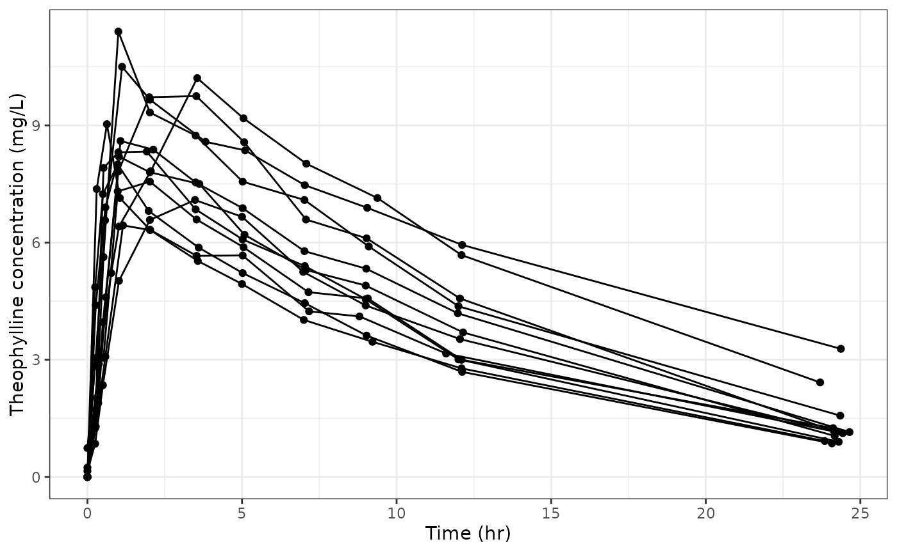
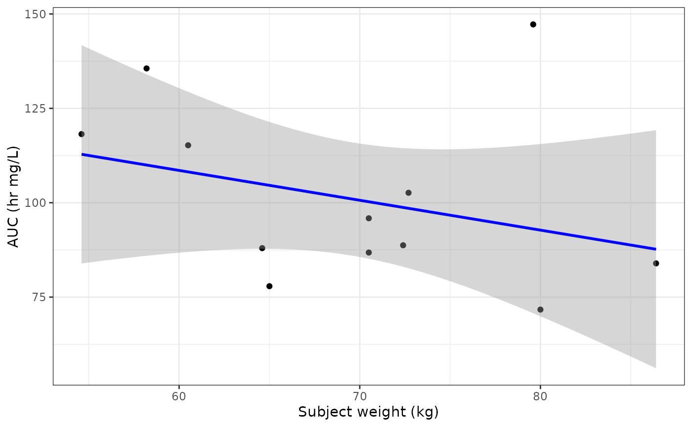

Integrating reportifyr into analyses
Integrating_reportifyr_into_analyses.RmdInitializing reportifyr
library(reportifyr)
#> ── Needed reportifyr options ───────────────────────────────────────────────────
#> ✖ options('venv_dir') is not set. venv will be created in Project root
#> ℹ Please set all options for package to work.
#> ── Optional version options ────────────────────────────────────────────────────
#> ▇ options('uv.version') is not set. Default is 0.5.1
#> ▇ options('python.version') is not set. Default is system version
#> ▇ options('python-docx.version') is not set. Default is 1.1.2
#> ▇ options('pyyaml.version') is not set. Default is 6.0.2
options("venv_dir" = file.path(here::here(), "vignettes"))
initialize_report_project(file.path(here::here(), "vignettes"))
#> Creating python virtual environment with the following settings:
#> venv_dir: /home/runner/work/reportifyr/reportifyr/vignettes
#> python-docx.version: 1.1.2
#> pyyaml.version: 6.0.2
#> uv.version: 0.5.1
#> python.version: 3.10.12
#> Copied standard_footnotes.yaml into /home/runner/work/reportifyr/reportifyr/vignettes/reportIf you’d like more detail on the initialization of
reportifyr, please see the vignette on initializing
reportifyr.
Generating a figure for use with reportifyr
Let’s first create a concentration-time plot of the Theophylline dataset:
library(ggplot2)
library(dplyr)
data <- Theoph
p <- ggplot(data, aes(x = Time, y = conc, group = Subject)) +
geom_point() +
geom_line() +
theme_bw() +
labs(x = "Time (hr)", y = "Theophylline concentration (mg/L)")
p
Saving the figure and creating metadata
If we want to include this plot into the report we’ll need to save
this figure to the ‘OUTPUTS/figures’ directory. There are two separate
processes to accomplish this - the easiest way is to call the wrapper
function ggsave_with_metadata:
figures_path <- file.path(here::here(), "vignettes", "OUTPUTS", "figures")
plot_file_name <- "theoph-pk-plot.png"
ggsave_with_metadata(
filename = file.path(figures_path, plot_file_name),
plot = p,
width = 6,
height = 4
)Alternatively you could call ggplot2::ggsave and then
call write_object_metadata:
ggplot2::ggsave(filename = file.path(figures_path, plot_file_name),
plot = p,
width = 6,
heigh = 4)
write_object_metadata(object_file = file.path(figures_path, plot_file_name))Both processes give the same final result, however, severing the tie between saving an object and writing its metadata may lead to the these objects becoming out of sync.
This brings us to metadata. reportifyr uses metadata to
create a record of the object being inserted into the word document to
aid in reproducibility.
reportifyr also uses a meta_type parameter to inject
standard footnotes into the word document (more on that in the vignette on
integrating reportifyr into report writing). We can use the function
get_meta_type to see what figure and/or table meta types
are currently saved in the standard_footnotes.yaml within
the ‘report’ directory upon initialization. We just need to provide the
path to the standard_footnotes.yaml we want to pull
meta_types from.
meta_types = get_meta_type(file.path(here::here(), "vignettes", "report", "standard_footnotes.yaml"))
names(meta_types)
#> [1] "logistic_plot" "boxplot" "TTE_plot"
#> [4] "correlation_plot" "GOF_plot" "ETA_histogram"
#> [7] "VPC" "kaplan-meier-plot" "conc-time-trajectories"
#> [10] "linear-regression-plot" "probit-regression-plot" "univariate"
#> [13] "final" "full" "alternative"
#> [16] "univariate_TTE" "final_TTE" "full_TTE"
#> [19] "alternative_TTE" "ER_summary" "covariate_descriptive"
#> [22] "frequency" "probit-regression-fit" "linear-regression-fit"
#> [25] "cox-regression-fit"Now, let’s re-save the plot object with the
conc-time-trajectories meta_type:
figures_path <- file.path(here::here(), "vignettes", "OUTPUTS", "figures")
meta_plot_file_name <- "theoph-pk-plot-mt.png"
ggsave_with_metadata(
filename = file.path(figures_path, meta_plot_file_name),
meta_type = meta_types$`conc-time-trajectories`,
width = 6,
height = 4
)Using meta_types also allows for tab-completion to help you get the
meta_type correct! Let’s use the preview_metadata_files to
see the difference when using a meta type:
metadata <- preview_metadata_files(file_dir = figures_path)
knitr::kable(metadata)| name | meta_type | equations | notes | abbreviations |
|---|---|---|---|---|
| theoph-pk-plot.png | N/A | N/A | N/A | N/A |
| theoph-pk-plot-mt.png | conc-time-trajectories | N/A | N/A | N/A |
There is also the get_meta_abbrevs function to see
standard abbreviations that can be added:
meta_abbrevs <- get_meta_abbrevs(
file.path(here::here(), "vignettes", "report", "standard_footnotes.yaml")
)
names(meta_abbrevs)
#> [1] "AUC" "AGEBL" "ALBBL" "ALTBL" "ASTBL" "B2MBL"
#> [7] "BSABL" "BSTGBGE2" "BSTGEQ3" "CADC_21D" "CADC_28D" "CADC_42D"
#> [13] "CADC_56D" "CATABL" "CAVGA_21D" "CAVGA_28D" "CAVGA_42D" "CAVGA_56D"
#> [19] "CAVGM_21D" "CAVGM_28D" "CMAXA" "CMAXM" "CNCEURO" "CRPBL"
#> [25] "CYTORSK" "ECOGBEQ2" "ECOGBGE1" "GLAUCBL" "HEPFCH" "HISTDIAB"
#> [31] "HSDRYEYE" "HSIOSURG" "IBMIBL" "IGGBL" "IGGFLG" "KERABL"
#> [37] "LDHBL" "LENSTABL" "MEDFL" "MMIGTY" "MMLCTY" "MMTY"
#> [43] "MPROTBL" "PCD38" "PRXGT3" "PRXGT4" "RACEBFLG" "RACEWFLG"
#> [49] "RENALFCH" "SBCMABL" "SCH" "SCHCH" "SEXN" "SPLITB"
#> [55] "STAGEBL" "STRETCHB" "TBILBL" "WTBL"Let’s perform a simple analysis computing subject level pharmacokinetic parameters and then study level statistics of the data set to generate an additional plot. We’ll compute maximum drug concentration (Cmax), time to peak drug concentration (Tmax), and area under the concentration-time curve (AUC) for the Theophylline data set before performing a linear regression between weight and AUC.
calc_auc_linear_log <- function(time, conc) {
auc <- 0
cmax_index <- which.max(conc)
for (i in 1:(length(time) - 1)) {
delta_t <- time[i + 1] - time[i]
if (i < cmax_index) {
auc <- auc + delta_t * (conc[i + 1] + conc[i]) / 2
} else if (i >= cmax_index && conc[i + 1] > 0 && conc[i] > 0) {
auc <- auc + delta_t * (conc[i] - conc[i + 1]) / log(conc[i] / conc[i + 1])
} else {
auc <- auc + delta_t * (conc[i + 1] + conc[i]) / 2
}
}
return(auc)
}
pk_params <- data %>%
mutate(Subject = as.numeric(Subject)) %>%
group_by(Subject) %>%
summarise(
cmax = max(conc, na.rm = TRUE),
tmax = Time[which.max(conc)],
auc = calc_auc_linear_log(Time, conc),
wt = Wt %>% unique()
)
knitr::kable(pk_params)| Subject | cmax | tmax | auc | wt |
|---|---|---|---|---|
| 1 | 6.44 | 1.15 | 71.69701 | 80.0 |
| 2 | 7.09 | 3.48 | 87.96923 | 64.6 |
| 3 | 7.56 | 2.02 | 86.80656 | 70.5 |
| 4 | 8.00 | 0.98 | 77.89347 | 65.0 |
| 5 | 8.20 | 1.02 | 95.87820 | 70.5 |
| 6 | 8.33 | 1.92 | 88.73128 | 72.4 |
| 7 | 8.60 | 1.07 | 102.63362 | 72.7 |
| 8 | 9.03 | 0.63 | 83.93743 | 86.4 |
| 9 | 9.75 | 3.52 | 115.22021 | 60.5 |
| 10 | 10.21 | 3.55 | 135.57607 | 58.2 |
| 11 | 10.50 | 1.12 | 147.23475 | 79.6 |
| 12 | 11.40 | 1.00 | 118.17935 | 54.6 |
lr <- pk_params %>%
ggplot(aes(x = wt, y = auc)) +
geom_point() +
geom_smooth(method = "lm", formula = y ~ x, se = TRUE, color = "blue") +
theme_bw() +
labs(x = "Subject weight (kg)", y = "AUC (hr mg/L)")
lr
Let’s save this plot with the logistic-regression-plot meta type:
plot_file_name <- "theoph-pk-exposure.png"
ggsave_with_metadata(filename = file.path(figures_path, plot_file_name),
meta_type = meta_types$`linear-regression-plot`,
plot = lr,
width = 6,
height = 4)And let’s view all the metadata files again:
new_meta <- preview_metadata_files(figures_path)
knitr::kable(new_meta)| name | meta_type | equations | notes | abbreviations |
|---|---|---|---|---|
| theoph-pk-exposure.png | linear-regression-plot | N/A | N/A | N/A |
| theoph-pk-plot.png | N/A | N/A | N/A | N/A |
| theoph-pk-plot-mt.png | conc-time-trajectories | N/A | N/A | N/A |
Generating a table for use with reportifyr
Now, let’s save out the pk_params data frame to .csv so we can
include it in the report. We can pass in any argument that would be used
in write.csv as well. Let’s use
row.names = FALSE:
tables_path <- file.path(here::here(), "vignettes", "OUTPUTS", "tables")
outfile_name <- "theoph-pk-parameters.csv"
write_csv_with_metadata(
pk_params,
file = file.path(tables_path, outfile_name),
row.names = FALSE
)Let’s also save out the Theophylline data set to include in the report. We can save this as an .RDS file, just to highlight the functionality:
data_outfile_name <- "theoph-pk-data.RDS"
save_rds_with_metadata(data, file = file.path(tables_path, data_outfile_name))At the end, we’ve generated two figures and two tables and saved them
alongside their metadata using reportifyr, allowing us to
easily incorporate them into our upcoming report writing!